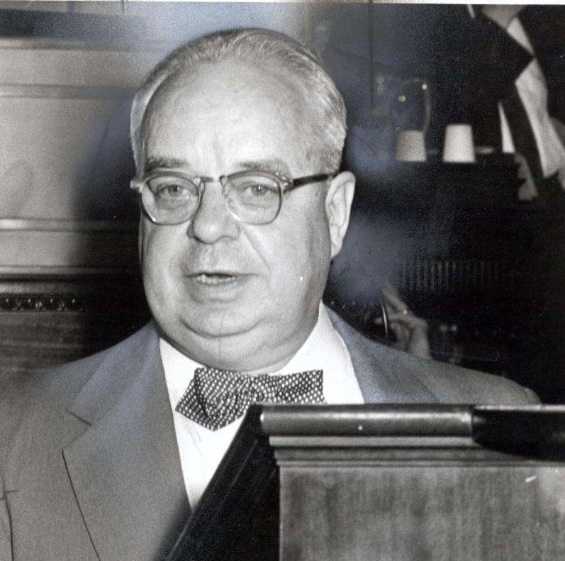

The Farmville Herald, published bi-weekly, was founded in 1890. J. Barrye Wall purchased the Herald in 1921 and served as editor during the period of the school closings. Under Wall's leadership, the Farmville Herald was a strident opponent of the Brown decision and championed local efforts to thwart desegregation and establish a county-wide system of private schools. Wall encouraged local citizens to "stand steady" against what he perceived as an overreaching federal government and the invasion of activist outsiders who disrupted the "harmonious" race relations in Farmville.
